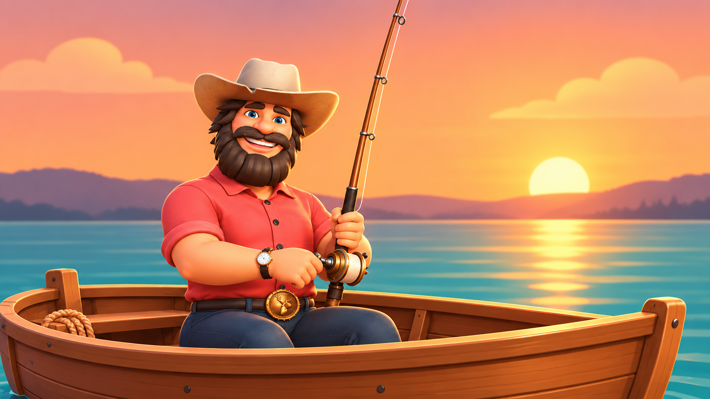

主盤是 5 軸 × 4 列，共 20 條賠付線；由左到右連續 3 個相同 symbol 開始計獎。最上方矮列是 Bonus Row，不算入賠付線。
金額魚會顯示押分的 0.2x～5x；如果同一 reel 上方轉出魚鉤，會把該 reel 的金額魚釣起並加入贏分，但金額魚不參與 20 條線兌獎。魚鉤命中時，上方漁夫會同步做拉竿動作。
Bonus Row 出現「漁夫本人」時，會先收集盤面所有金額魚，再進入大魚拉線事件。
大魚與金色大魚會以 5 段或 9 段顯示，初始只有魚頭和 ???$；成功率 80%，失敗會顯示 0$。
這是純前端展示用 demo，不涉及真實下注。